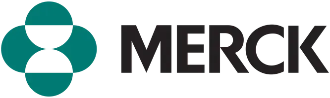
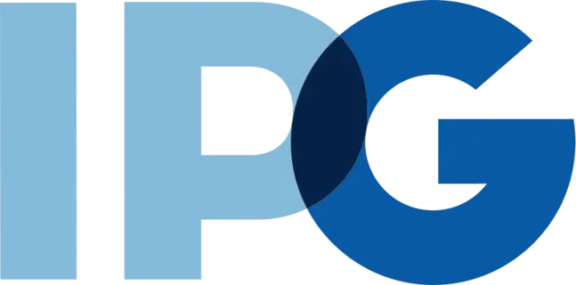
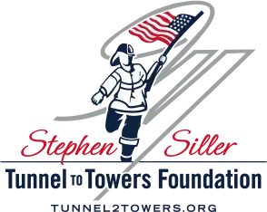

AI product strategist and design leader with 15 years across pharma, enterprise UX, design systems, and AI implementation. I turn ambiguous business problems into working products, prototypes, and production systems.




I start with the decision path: input, output, checkpoints, and proof. Then I use Claude Code, Codex, Gemini, Ollama, and local models to build and refine the loop.
Define the user, input, output, constraints, and the trust bar.
Human steps, model steps, review checkpoints, edge cases, and failure states.
The interface where users guide, inspect, correct, and trust the AI.
Prompt, code, run, inspect, and revise with Claude Code, Codex, Gemini, Ollama, and local models.
Test real cases, compliance needs, source evidence, and production behavior.
I stay across strategy, UX, model behavior, code, and validation, so the build moves fast without becoming a loose demo.
Clarify the problem, users, constraints, and decision path before teams commit time or budget.
Design interfaces, systems, and interaction models that scale across teams, brands, and regulated workflows.
Use AI-assisted development to move from concept to working prototype or production product quickly.
Lead cross-functional work from executive brief to design review, engineering handoff, and launch.
Stay with the work through launch, iteration, and the operational details that make products usable.
Bring account strategy, UX, design systems, and AI implementation into one product leadership skill set.
Built pharma AI tools for agency teams across MLR claim detection, pre-submission annotation, routing, finance, and regulatory workflows.
Turned early client asks into testable AI POCs, including ListingPal's 90-second listing workflow and WeReady's Bailey intelligence dashboard.
Led enterprise UX systems at Kinesso across MIE data visualization, DXA, and white-label workflow tooling used by 7,000+ users across 22 brands.
Pharma claim detection, pre-submission annotation, AI routing, and MLR workflow systems. Direct client work inside FDA/HIPAA environments.
Built WeReady and ListingPal as client-led POCs. Bailey intelligence, AI listing generation, and vertical testing.
Scaled design from 2 to 30 people across the US and Poland. 7,000+ daily users across 22 brands. 7 international awards.
Designed FDA/HIPAA healthcare compliance software and the component library behind audited product workflows.
Led major pharma brand work across TV, radio, digital, gaming, and Times Square campaigns before moving into UX team building.
Open to Director, VP, and senior IC roles across AI strategy, product, UX, and design leadership.